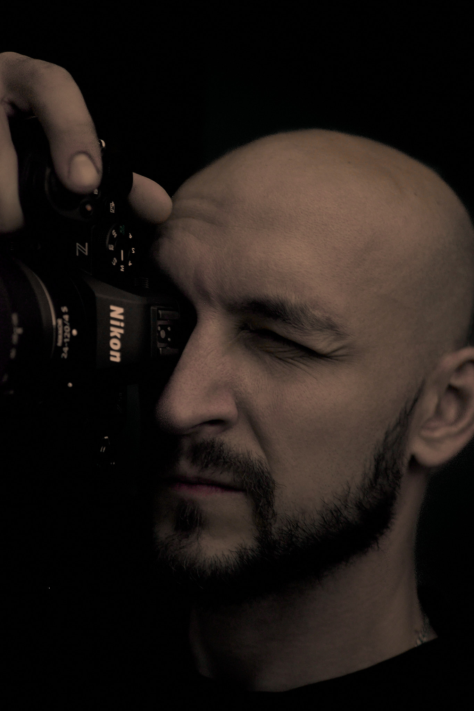
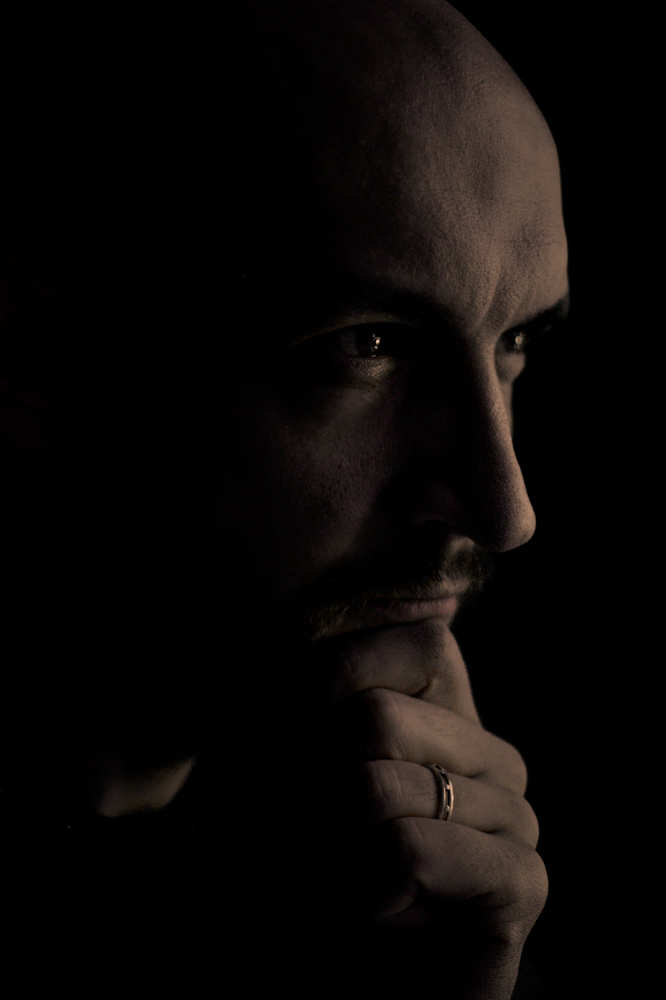

Jakub Gruda Fotografia
Fotograf reportażowy w Siedlcach i na Mazowszu. Dokumentuję chrzciny, komunie i uroczystości rodzinne — oraz chętnie podejmę się reportażu ślubnego i wesela w tym samym, naturalnym stylu. Fotografuję w świetle zastanym, skupiając się na autentycznych emocjach i prawdziwych historiach.
O mnie
Cześć, mam na imię Jakub. Jestem fotografem reportażowym, który stawia na naturalność i autentyczne emocje. Najbardziej cenię chwile, których nie da się powtórzyć – spojrzenia, gesty i uśmiechy pojawiające się spontanicznie.
Specjalizuję się w reportażach chrzcin, komunii oraz sesjach rodzinnych, narzeczeńskich, ciążowych i noworodkowych. Równolegle buduję portfolio ślubne i chętnie przyjmuję rezerwacje na reportaż ślubny — szczególnie pary, z którymi wcześniej wykonam sesję narzeczeńską, abyście przed ślubem poznali mój styl pracy.
Ukończyłem kurs liturgiczny uprawniający do fotografowania podczas uroczystości kościelnych. Dzięki temu znam zasady pracy w świątyni i potrafię dyskretnie dokumentować ważne wydarzenia religijne.
Najchętniej fotografuję w naturalnym świetle. Zamiast ustawiania i pozowania, wolę obserwować wydarzenia i dokumentować je takimi, jakie są naprawdę. Dzięki temu zdjęcia zachowują swoją szczerość i wyjątkowy charakter.

Mój sposób pracy
Podczas fotografowania staram się być niewidocznym obserwatorem. Nie ingeruję w przebieg wydarzeń bardziej niż to konieczne. Dzięki temu powstają kadry pełne naturalnych emocji i prawdziwych relacji między ludźmi.
Portfolio
Poniżej znajdziesz wybrane fotografie z wykonanych przeze mnie reportaży. Każde zdjęcie opowiada fragment historii i pokazuje emocje towarzyszące ważnym chwilom.
Chrzciny
Reportaż z wyjątkowego dnia pełnego rodzinnych emocji i wzruszeń.

{kind=link}
{kind=link}
{kind=link}
Pierwsza Komunia Święta
Ponadczasowe kadry z uroczystości kościelnych i rodzinnych spotkań.
{kind=link}
{kind=link}
{kind=link}
Wybrane kadry
Fotografie pokazujące mój styl pracy i podejście do reportażu.
{kind=link}
{kind=link}
{kind=link}
Oferta
Fotografuję ważne momenty życia, skupiając się na naturalnych emocjach i autentycznych historiach.
Fotografia ślubna
Reportaż ślubny obejmujący przygotowania, ceremonię, życzenia i wesele. Portfolio ślubne wciąż rozwijam — dlatego szczególnie zapraszam pary planujące współpracę, najlepiej po wcześniejszej sesji narzeczeńskiej. Stawiam na naturalne kadry i prawdziwe emocje.
Fotografia chrztu
Zdjęcia z uroczystości chrztu świętego oraz spotkania rodzinnego.
Fotografia komunijna
Reportaż z Pierwszej Komunii Świętej i rodzinnych uroczystości.
Sesje narzeczeńskie
Swobodne i subtelne sesje dla par planujących ślub. To doskonała okazja, aby oswoić się z obiektywem przed dniem ślubu oraz stworzyć wyjątkową pamiątkę z okresu narzeczeństwa. Stawiam na autentyczne emocje, bliskość i spontaniczne kadry.
Sesje ciążowe
Sesje ciążowe wykonywane w plenerze lub w domowym zaciszu. Fotografuję ten wyjątkowy czas w naturalny i subtelny sposób, skupiając się na emocjach, radości oczekiwania oraz relacjach przyszłych rodziców.
Sesje noworodkowe
Spontaniczne sesje noworodkowe bez sztucznego pozowania i skomplikowanych aranżacji. Dokumentuję pierwsze dni życia dziecka, rodzinne chwile oraz więź między rodzicami i nowym członkiem rodziny, tworząc ponadczasową pamiątkę.
Sesje rodzinne
Wykonuję sesje rodzinne w Siedlcach, Warszawie oraz na terenie województwa mazowieckiego i lubelskiego. Rodzinne spotkania pełne spontanicznych uśmiechów, zabawy i bliskości. Sesje realizuję w plenerze lub w domu, koncentrując się na prawdziwych relacjach i naturalnych momentach, które najlepiej oddają charakter Waszej rodziny.
Nieustannie rozwijam swoje umiejętności i poszerzam portfolio, aby oferować coraz wyższą jakość zdjęć oraz wyjątkowe pamiątki na lata.
Jak wygląda współpraca
Prosty i przejrzysty proces pomaga spokojnie przygotować się do sesji lub reportażu. Na każdym etapie możesz liczyć na moje wsparcie.
-
1. Kontakt i ustalenia
Napisz lub zadzwoń. Ustalamy termin, zakres reportażu i Twoje oczekiwania.
-
2. Rezerwacja terminu
Potwierdzamy szczegóły współpracy i rezerwuję dla Ciebie datę w kalendarzu.
-
3. Reportaż i oddanie zdjęć
W dniu wydarzenia pracuję dyskretnie, a po selekcji i obróbce przekazuję gotowy materiał.
Opinie klientów
Opinie Google pojawią się tutaj automatycznie.
Najczęściej zadawane pytania
Czy fotografujesz śluby?
Tak. Chętnie podejmę się reportażu ślubnego i wesela. Portfolio ślubne wciąż buduję — szczególnie zapraszam pary, które wcześniej wykonają u mnie sesję narzeczeńską.
Czy fotografujesz poza Siedlcami?
Tak. Wykonuję reportaże i sesje również w Warszawie, Mińsku Mazowieckim, Łukowie, Sokołowie Podlaskim oraz na terenie województw mazowieckiego, lubelskiego i podlaskiego.
Czy posiadasz uprawnienia do fotografowania w kościele?
Tak. Ukończyłem kurs liturgiczny uprawniający do fotografowania podczas uroczystości kościelnych.
Jak wygląda współpraca?
Po kontakcie ustalamy szczegóły wydarzenia lub sesji. Następnie rezerwuję termin, wykonuję reportaż, a po selekcji i obróbce przekazuję gotowe zdjęcia w uzgodnionej formie.
Czy wykonujesz sesje rodzinne i plenerowe?
Tak. Realizuję sesje rodzinne, narzeczeńskie, ciążowe i noworodkowe zarówno w plenerze, jak i w domowym zaciszu.
Jak mogę zarezerwować termin?
Najprościej skontaktować się telefonicznie lub mailowo. Odpowiem na pytania i sprawdzę dostępność terminu.
Kontakt
Jeśli szukasz fotografa, który uchwyci ważne chwile w naturalny i dyskretny sposób, zapraszam do kontaktu. Chętnie odpowiem na pytania i przedstawię szczegóły współpracy.
Napisz wiadomość
© 2026 Jakub Gruda Fotografia. Wszelkie prawa zastrzeżone. Design: HTML5 UP.